Император

Редкость: Epic
Пол: Male
Фракция: Heralds
Энергия: Shadow
Класс: Hard
Добыча: Rift Keys and Chests
| Название | Редкость | Изображение |
|---|---|---|
| Forgotten Ruler | Обычный | 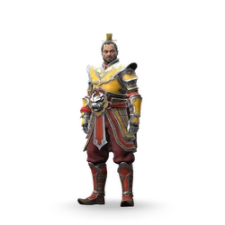 |
| Катарсис | Эпический | 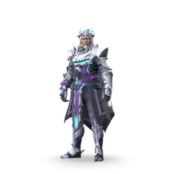 |
| Зенит власти | Эпический | 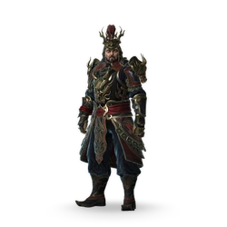 |
| Теневой сапфир | Сезонный | 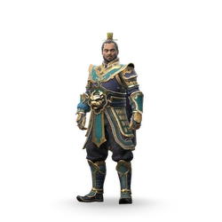 |
| Коррумпированный монарх | Сезонный | 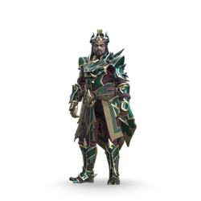 |
| Название | Редкость | Изображение |
|---|---|---|
| Королевские перчатки | Обычный | 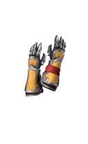 |
| Королевские перчатки | Обычный | 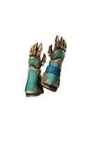 |
| Раскаяние монарха | Обычный |  |
| Разрушители оков | Обычный | 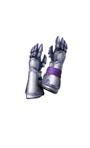 |
| Королевские регалии | Обычный | 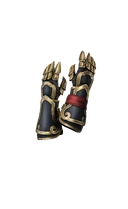 |
| Сливы | Редкий | 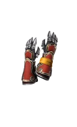 |
| Серебряные накладки | Редкий | 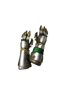 |
| Цветущая мудрость | Редкий | 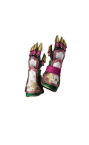 |
| Жнецы насилия | Редкий | 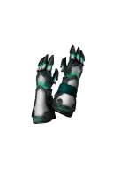 |
| Траур времени | Редкий | 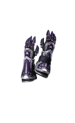 |
| Испорченный шип | Эпический | 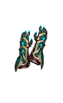 |
| Название | Описание | Изображение |
|---|---|---|
| Острые Когти | Успешные атаки Зверя Тени оставляют раны, наносящие урон с течением времени. |  |
| Равновесие | Падая от критической или воздушной атаки, Император или Теневой Зверь готовится к кувырку. | |
| Выпад зверя | Император использует тяжелую атаку Зверя Тени. Расстояние, на которое тяжелая атака отталкивает противника, увеличивается. | |
| Врожденная теневая энергия | Когда Теневой Зверь вырывается наружу, он полностью восстанавливает свою Теневую Энергию. |  |
| Зеркало Тени | Император или Теневой Зверь постепенно накапливает теневую энергию, если противник принимает теневую форму. |  |
| Выживание сильнейших | Император восстанавливает свое здоровье, когда принимает форму тени. |  |
| Smell of Terror | Атака теневой форме восстанавливает больше здоровья. |  |
| Дикий Взрыв | Радиус взрыва трансформации увеличен. | |
| Chitinous Spike | Император использует дальнюю атаку Зверя Тени. Атаки дальнего боя всегда наносят критический урон. | |
| Теневые железы | Полная полоска энергии тени позволяет Теневому Зверю использовать 2 теневые способности. |  |
| Судьба Жажды | Успешные атаки дают дополнительную энергию тени героям из вашей команды | |
| Судьба безжалостности | У героев вашей команды увеличен урон от дальних атак. |  |